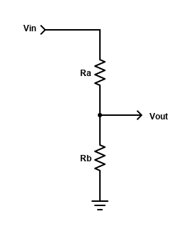
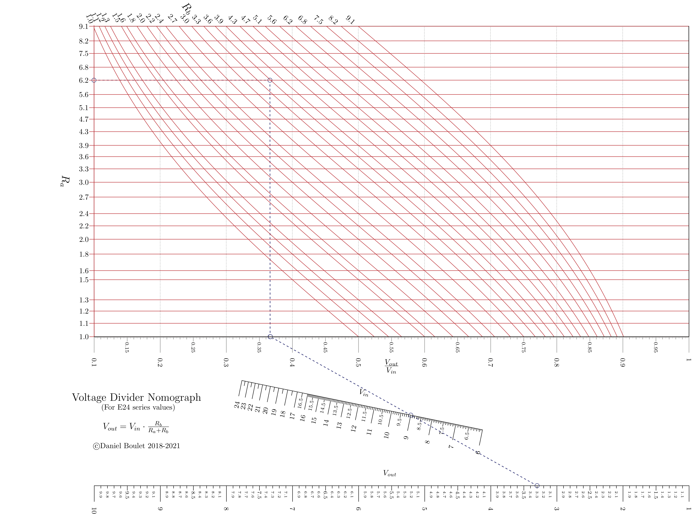

Voltage Divider¶
Theory and background¶
In electronics, resistive voltage dividers are used for a variety of purposes. The formula for a resistive voltage divider is [Wik21b]:
\(\frac{V_{out}}{V_{in}} = \frac{R_b}{(R_a + R_b)}\)
{kind=link}
When designing voltage dividers, constraints may demand engineers choose resistors from a set of “preferred values” [Wik21a]. These values are discrete and engineers must select the best combination of resistors based on tolerance and the available preferred values. Similar voltage ratios can be obtained with different combinations of resistor values.
The voltage divider nomograph links input voltage (\(V_{in}\)), output voltage (\(V_{out}\)) and a pair of resistor values into a single nomograph. Pynomo’s Type 5 blocks are well suited for plotting relationships between pairs of discrete values. A vertical line dropped from the intersection of \(R_a\) values and \(R_b\) values reveals the \(V_{out}\) / \(V_{in}\) voltage ratio. Alignment with a Type 2 block allows the engineer to determine \(V_{out}\) given \(V_{in}\) (or vice versa).
Of greater benefit is the ability to quickly determine the optimum pair of resistor values for a given application. For example, given an input voltage (9V) and desired output voltage (3.3V), the engineer draws a straight line from the \(V_{out}\) axis, through the \(V_{in}\) axis to the base of the voltage ratio graph. A perpendicular line is then drawn from the base to the top of the graph. The vertical line’s nearest approach to the intersection of \(R_a\) and \(R_b\) values represents the best combination of resistor values. It can be quickly shown that one combination of values (\(R_a\) = 6.2 and \(R_b\) = 3.6) will produce an output voltage very close to the desired value (3.3061V).
Generated nomograph¶
Source code¶
1"""
2 voltdiv_E24_resistors.py
3
4 Nomogram to calculate resistor values for simple voltage divider. This
5 along with this program. If not, see <http://www.gnu.org/licenses/>.
6"""
7
8from pynomo.nomographer import *
9import sys
10sys.path.insert(0, "..")
11
12from pyx import *
13pyx.text.set(text.LatexEngine)
14
15import numpy as np
16
17resistors = [
18 1.0, 1.1, 1.2,
19 1.3, 1.5, 1.6,
20 1.8, 2.0, 2.2,
21 2.4, 2.7, 3.0,
22 3.3, 3.6, 3.9,
23 4.3, 4.7, 5.1,
24 5.6, 6.2, 6.8,
25 7.5, 8.2, 9.1
26]
27
28# Type 5 contour
29def f1(x, u):
30 return np.log10(u * (1 - x) / x)
31
32
33block_1_params = {
34 'width': 12.0,
35 'height': 25.0,
36 'block_type': 'type_5',
37
38 'u_func': lambda u: np.log10(u),
39 'u_values': resistors,
40 'u_axis_color': pyx.color.cmyk.Red,
41 'u_title': r'\Large{$R_a$}',
42 'u_text_format': r"\normalsize{$%3.1f$}",
43
44 'v_func': f1,
45 'v_values': resistors,
46 'v_axis_color': pyx.color.cmyk.Red,
47 'v_title': r'\Large{$R_b$}',
48 'v_text_format': r"\normalsize{$%3.1f$}",
49
50 'wd_tag': 'A',
51 'wd_tick_side': 'right',
52 'wd_title':r'\Large $\frac{V_{out}}{V_{in}}$',
53 'wd_tick_levels': 5,
54 'wd_tick_text_levels': 2,
55 'wd_title_opposite_tick': True,
56 'wd_axis_color': pyx.color.cmyk.Gray,
57 'isopleth_values': [
58 [6.2, 'x', 'x'],
59 ],
60 'vertical_guide_nr': 10,
61 'manual_x_scale': True, # trick to "decompress" Ra scale
62
63}
64
65# this is non-obvious trick to find bottom edge coordinates of the grid in order
66# to align it with N nomogram
67block1_dummy = Nomo_Block_Type_5(mirror_x=False)
68block1_dummy.define_block(block_1_params)
69block1_dummy.set_block()
70
71# Let's define the N-nomogram
72N_params_3 = {
73 'u_min': block1_dummy.grid_box.params_wd['u_min'],
74 'u_max': block1_dummy.grid_box.params_wd['u_max'],
75 'function': lambda u: u,
76 'title': '',
77 'tag': 'A',
78 'tick_side': 'right',
79 'tick_levels': 2,
80 'tick_text_levels': 2,
81 'reference': False,
82 'tick_levels': 0,
83 'tick_text_levels': 0,
84 'title_draw_center': True
85}
86N_params_2 = {
87 'u_min': 6.0,
88 'u_max': 24.0,
89 'function': lambda u: u,
90 'title': r'$V_{in}$',
91 'tag': 'none',
92 'tick_side': 'left',
93 'tick_levels': 4,
94 'tick_text_levels': 3,
95 'title_draw_center': True,
96 'scale_type': 'linear smart',
97}
98N_params_1 = {
99 'u_min': 1.0,
100 'u_max': 10.0,
101 'function': lambda u: u,
102 'title': r'$V_{out}$',
103 'tag': 'none',
104 'scale_type': 'linear smart',
105 'tick_side': 'right',
106 'tick_levels': 3,
107 'tick_text_levels': 3,
108 'title_draw_center': True
109}
110
111block_2_params = {
112 'block_type': 'type_2',
113 'f1_params': N_params_1,
114 'f2_params': N_params_2,
115 'f3_params': N_params_3,
116 'isopleth_values': [
117 # Vout, Vin, ratio
118 [3.3, 9.0, 'x'],
119 ]
120}
121
122main_params = {
123 'filename': 'ex_voltage_divider.pdf',
124 'paper_height': 8.5*2.54,
125 'paper_width': 11.0*2.54,
126 'block_params': [block_1_params, block_2_params],
127 'transformations': [('rotate', 0.01), ('scale paper',)],
128 'title_str': r'\Large Voltage Divider Nomograph \par \
129 \normalsize (For E24 series values) \par \bigskip \
130 \large $V_{out}=V_{in} \cdot \frac{R_b}{R_a+R_b}$ \
131 \par \bigskip \normalsize \copyright Daniel Boulet 2018-2021',
132 'title_x': 2.0,
133 'title_y': 4.0,
134 'isopleth_params': [
135 {
136 'color': 'blue',
137 'linewidth': 'thick',
138 'linestyle': 'dashed',
139 'circle_size': 0.10,
140 },
141 ],
142}
143
144Nomographer(main_params)